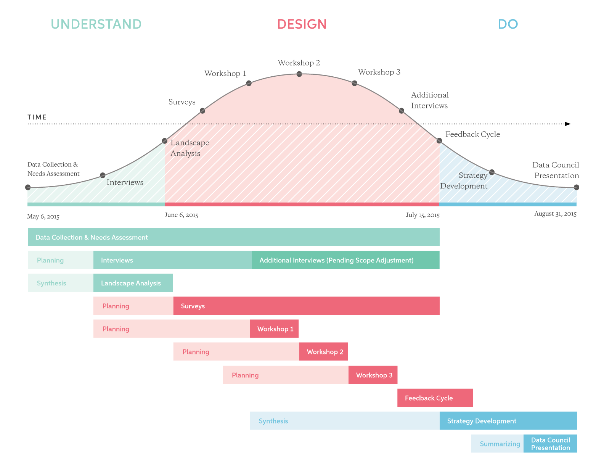
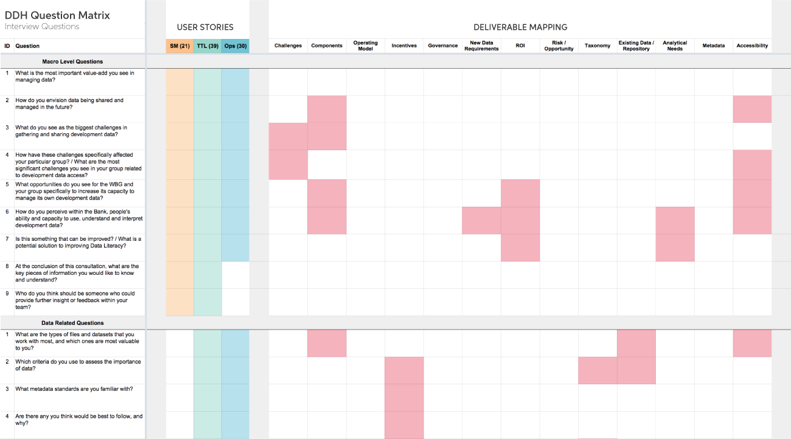

Introduction
The Development Data Hub (DDH) aims to provide a systematic approach for capturing, curating, cataloguing and disseminating data across the World Bank Group (WBG) in compliance with international standards and best practices. DDH will become the central system where the producers of data submit their data and the demand side of data finds and retrieves it.
Project Summary
Objectives
This project focuses on validating, optimizing, and delivering a business strategy for the implementation of DDH that reflects industry best practices.
There are two primary objectives of the Development Data Hub (DDH) concept:
- To address the identified need for data accessibility and issues around storage and curation of development data that are currently leading to fragmentation and inefficiencies.
- To support the development of a hub to provide a systematic approach for capturing, cataloging, and disseminating data in compliance with international standards and best practices - key in improving the WBG’s capacity to manage its own development data.
Current Project Status
For the latest overview of the status of the project and progress on key deliverables, please refer to the Project Trello page where all tasks and activities are being assigned, tracked, and executed.
Approach
Our consultative process revolves around design-thinking, human-centered design and collaboration. Each stage of the process undergoes a cycle of understand > design > do in order to be able to adapt and respond to inputs as they are discovered.
Understand
This phase focuses on information gathering from the DDH team and key internal stakeholders at the WBG in order to understand the problem from the eyes of those who interact with data on a daily basis. We will achieve this through preliminary interviews, discussions, reviewing processes and documentation to develop an accurate representation of the problem and what is an accurate measure of success. By understanding what success looks like to the primary stakeholders, we can better inform the do stage.
Key Tasks & Deliverables
- Knowledge Transfer
- Landscape Analysis
- Interviews
Team Lead(s)

Design
We fundamentally believe that there is a much higher likelihood of successful implementation when key internal stakeholders are engaged as co-creators in the process. As such a core part of our consultation process involves developing deliverables jointly through interactive workshops. These workshops will build off each other to refine each facet of the proposed strategy for the DDH.
Key Tasks & Deliverables
- Surveys
- Workshops
- Additional Interviews
- Feedback Cycle
Team Lead(s)

Do
Once initial design concepts have been developed through workshops we will begin to refine these concepts based on industry best-practice, insights from initial conversations and our experience implementing similar strategies. This will be then shared during various feedback sessions with DEC leadership to discuss any aspects of this prototype strategy that will need to be refined before its ultimate presentation to the Data Council group.
Key Tasks & Deliverables
- Feedback Cycle
- Strategy Development
- Report Creation
- Data Council Presentation
Team Lead(s)
Structure
The framework by which the project will revolve around will be
User Stories
In order to better frame this consultation, recommendations for the DDH will be made with respect to three key audiences identified as primary focal areas. These audiences are Senior Management, Task-Team Leaders (TTLs), and Operators. A further distinction will be made between data producers and consumers where relevant.
The advantage of this approach is to focus on clear needs and objectives of end users, and design a strategy that meets those needs in a specific context.
Deliverable Mapping
This
Important Links
Most files and documents will be shared through Box. Any relevant files or links that need to be shared externally will be added to this section